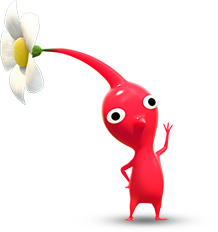
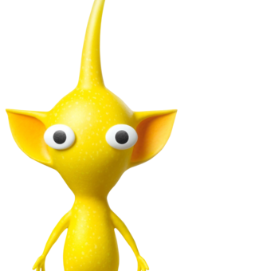
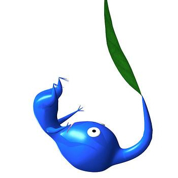
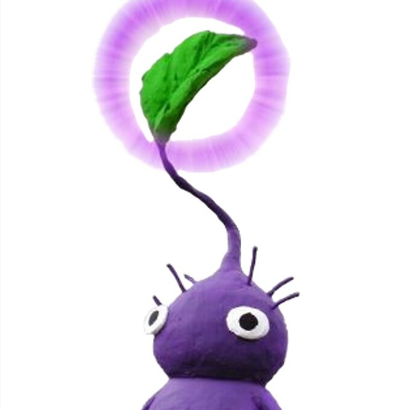
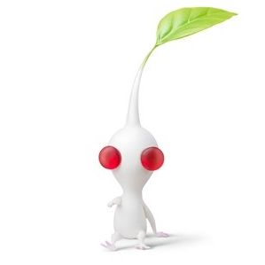

The Types Of Pikmin
- 
- 
- 
- 
- 
"Pikmin 2 is a 2004 puzzle strategy video game developed and published by Nintendo for the GameCube home video game console. It is the direct sequel to the 2001 game Pikmin and is the second game in the Pikmin series."
Pikmin 2 tells the story of Captain Olimar and his coworker Louie, aliens working for an intergalactic shipping company. Olimar has just returned from being stranded on post-apocalyptic Earth, where he escaped using the help of tiny plant creatures called Pikmin. However, as his company went into debt in his absence, him and Louie must return to Earth to collect valuable trash from Earth, once again using the help of their Pikmin friends.
The first Pikmin game holds a special place in my heart, as it was one of the few games I was able to beat as a kid. I remember my entire family gathering around the TV as I fought the final boss. Pikmin 2 takes everything Pikmin did well, and built upon it to make a great gaming experience, even for a kid like me that didn’t understand what I was enjoying about the game at the time. Pikmin 2 had more content to explore, more mechanics, and all the charm of the first game. I wish more Nintendo fans appreciated the Pikmin series.
Pikmin 2 isn't the latest entry in the Pikmin series. That title goes to Pikmin 3, originally released for the WiiU in 2013. While I played Pikmin 3 and enjoyed it, it felt a lot shorter in terms of playable content, despite being a much more polished experience. Pikmin 3 will be re-released for the Nintendo Switch at the end of 2020 however, featuring extra content. If I get a Switch, I will gladly buy the game again to give it a second chance to surpass my love for Pikmin 2.